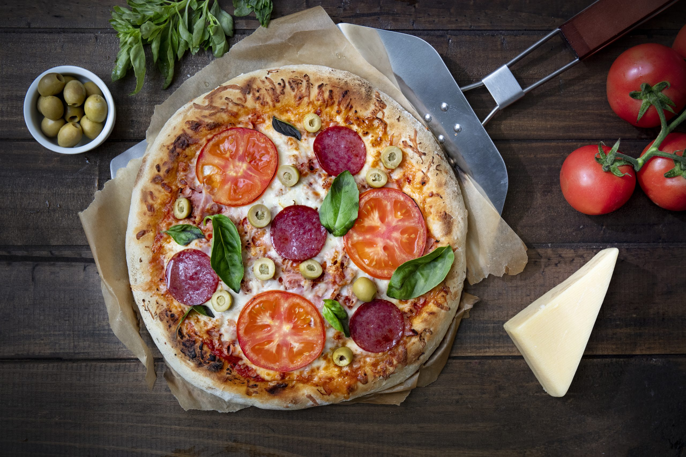

Receta de Pizza

Descripción
La pizza es un plato de origen italiano, generalmente circular, hecho con una base de masa de pan, normalmente fina, cubierta con salsa de tomate, queso mozzarella y otros ingredientes al gusto. Se hornea a alta temperatura, tradicionalmente en un horno de leña, aunque también puede hacerse en hornos eléctricos.
Ingredientes
Para la Masa
- 500 grs de harina
- 6 gramos de levadura seca o 12 gramos de levadura fresca
- 350 grs de agua tibia
- 10 grs de sal
- 18 grs de aceite de oliva
Para el Relleno
- 10 láminas de jamón
- 1 taza de queso rallado mantecoso
- Albahaca a gusto
- 1 cucharadita de orégano
- 2 cucharadas de aceitunas
- 3/4 taza de salsa de tomate
Preparación
Pasos
- En un bol grande disuelve la levadura en el agua -deben salir burbujas, eso significa que está activada-. Agregar la harina y unir bien. Lentamente agregar el aceite y la sal hasta que todo esté bien mezclado. Llevar a una superficie con un poco de harina y amasar por 10 minutos aproximadamente hasta que quede una masa suave y elástica.
- Calentar otro bol 30 segundos en el microondas. Luego, untar el bol con aceite de oliva, poner la masa en él y cubrir con film transparente. Dejar reposar por 1 hora o hasta que doble su tamaño. Hacer dos bolas, dejar en una bandeja, taparlas con un paño y dejarlas reposar 20 minutos más.
- Poner en una superficie un poco de harina y estirar una de las masas con un uslero, ir apretando el borde de la masa para que quede de 3 cm. Luego hacer lo mismo con la segunda bola.
- Rellenar la masa con salsa de tomate, queso, jamón y orégano, llevar al horno por 12 minutos y servir de inmediato.
¡Listo! a disfrutar.
Pagina Principal